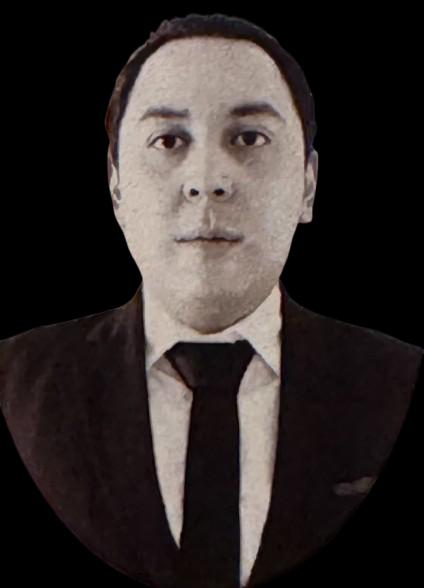
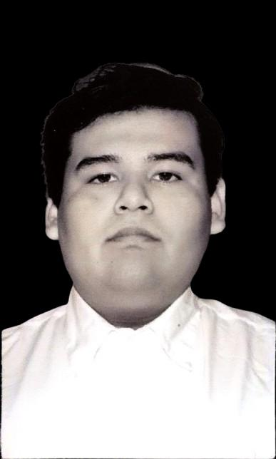
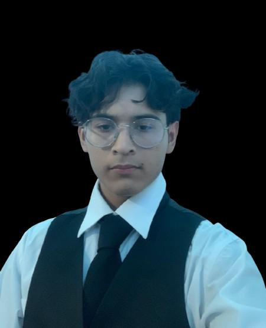
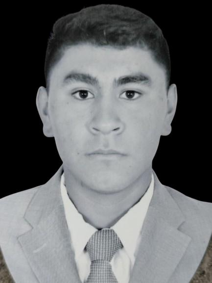

STOP es un sistema creado en Instituto Tecnológico Superior del Occidente del Estado de Hidalgo (ITSOEH) destinado a modernizar el acceso a los trámites presidenciales mediante el desarrollo de un software integral
La problemática es que los ciudadanos enfrentan muchas dificultades para acceder a los servicios del gobierno de manera fácil y rápida. Hacer trámites es lento y complicado, lo que genera frustración
Implementar un sistema de gestión de trámites presidenciales que permita reducir los tiempos de espera en un 50%, mejorando la eficiencia del proceso administrativo, garantizando la accesibilidad de la información a todos los ciudadanos

|  |  |  |  |
| Pedro López Flores | Cristian Aguillar Jimenez | Angel Dayan Eurosa Mera | Brayan Angeles Dorantes |
| 22011939@itsoeh.edu.mx | 22011476@itsoeh.edu.mx | 22011129@itsoeh.edu.mx | 22011934@itsoeh.edu.mx |